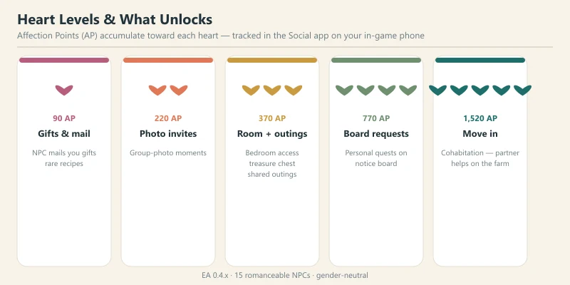
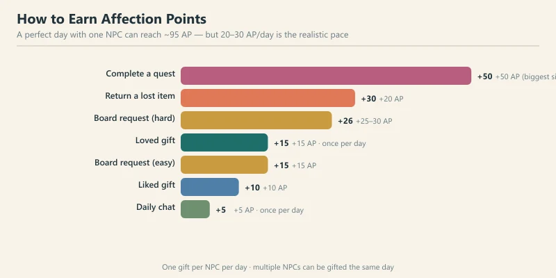
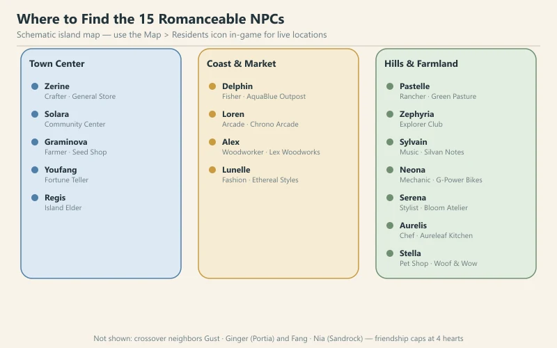
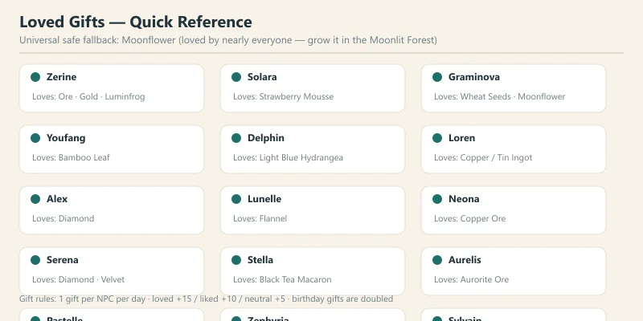
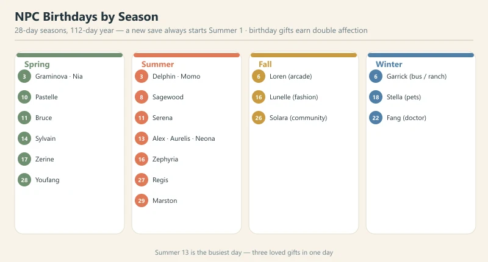
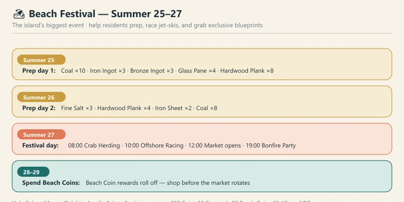
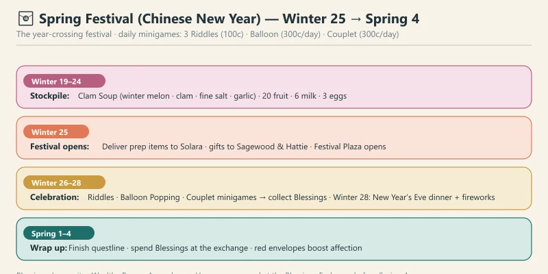
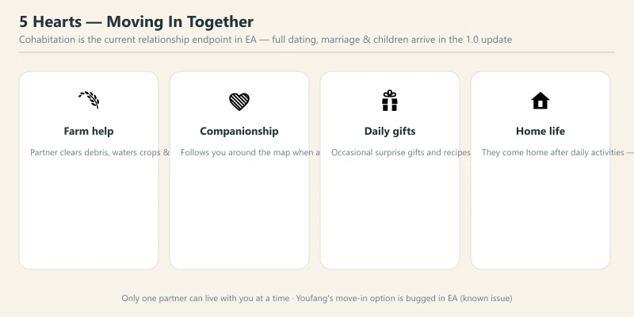

🏝️ Starsand Island Community & Romance Guide
Game version: Early Access (Feb 12, 2026 launch) | Focus: NPC Relationships, Gifts & Festivals
A farming sim's heart is its people, and Starsand Island (星砂岛) has one of the friendliest casts in the genre. There are 15 romanceable NPCs — 8 bachelorettes and 7 bachelors — and romance is fully gender-neutral: anyone can court anyone, regardless of how you shape your avatar. Raise affection to 5 hearts and your chosen partner will move into your farm and help you run it.
There's a catch worth knowing up front: the full dating content — dates beyond shared outings, marriage, and children — is not in Early Access yet. What you can do today is push a relationship all the way to 5 hearts and start living together. Everything else is on the roadmap for the Summer 2026 full release (which also brings 4-player co-op).
This guide covers the entire community layer: how affection works, every NPC's loved gifts, birthdays, the two big festivals, outings, and the move-in system.
Data sourced from in-game testing, the official Chinese strategy handbook (Bilibili Wiki), and community research. Prices in in-game gold (g). Verified for EA version 0.4.x.
📋 Table of Contents
- How Relationships Work
- Heart Levels & Unlocks
- How to Earn Affection Points
- The 15 Romanceable NPCs & Their Loved Gifts
- The Best Gifts — Universal Strategy
- NPC Birthdays Calendar
- Festivals & Seasonal Events
- Shared Outings & Dates (3 Hearts)
- Moving In Together (5 Hearts)
- Why the Mentors Are Easiest to Romance
- Pro Tips & Common Mistakes
- FAQ
How Relationships Work
Every NPC carries a 5-heart affection meter, tracked in the Social app on your in-game phone. The phone also shows each NPC's live location, their discovered gift preferences, and your pending requests — make a habit of opening it every morning.
A few ground rules:
- One gift per NPC per day. You can gift as many different NPCs as you like, but each individual NPC only takes one gift a day.
- Talk before you gift. Chatting first gives you a small affection bonus on top of the gift.
- Affection is a two-way street. As your bond deepens, NPCs start sending you gifts, mail, and occasionally recipes — not just you doing all the running.
- You can romance everyone at once. There's no jealousy system in EA, so feel free to spread the love while you decide who to settle down with.
Heart Levels & Unlocks

Affection Points (AP) accumulate toward each heart. The community-verified thresholds and what they unlock:
| Heart | Cumulative AP | What Unlocks |
|---|---|---|
| ❤️ 1 | 90 AP | NPC starts mailing you gifts — occasionally rare recipes |
| ❤️❤️ 2 | 220 AP | Group-photo invitations |
| ❤️❤️❤️ 3 | 370 AP | Bedroom access (hidden treasure chest inside), shared outings unlock |
| ❤️❤️❤️❤️ 4 | 770 AP | NPC posts personal requests on the bulletin board; personal story quests |
| ❤️❤️❤️❤️❤️ 5 | ~1,520 AP | Move-in / cohabitation option |
Note on the 4–5 heart thresholds: community sources disagree — the relationship-system article lists 500 and 750 AP while the dedicated romance guide lists 770 and ~1,520. The developer hasn't officially confirmed the exact values, so treat these as ballpark targets. The unlock types at each heart are consistent across sources.
The chest inside an NPC's bedroom (3 hearts) is the real prize — it holds exclusive decor and refreshes weekly, so check it every Sunday alongside your other chores.
How to Earn Affection Points

Every positive interaction feeds the same pool. Here's everything that awards AP:
| Activity | AP | Notes |
|---|---|---|
| Daily chat | +5 | Once per day per NPC — talk to everyone, it's free |
| Neutral gift | +5 | Wastes the daily gift slot; avoid if you can |
| Liked gift | +10 | Solid, repeatable daily income |
| Loved gift | +15 | The best daily lever — plan your gifts around these |
| Bulletin board request (easy) | +15 | Refresh daily |
| Bulletin board request (hard) | +25–30 | Worth prioritizing |
| Return a lost item | +20 | Pick up lost items you find around the island |
| Complete a quest (story / profession) | +50 | The single biggest boost in the game |
A perfect day with one NPC — loved gift + chat + their board request + a quest — can hit roughly 95 AP in one go. Realistically, most players settle into a 20–30 AP/day rhythm per NPC, which puts a 5-heart romance at roughly 6–9 weeks of daily play. That sounds long, but the mentor characters (see §10) get there in half the time.
The 15 Romanceable NPCs & Their Loved Gifts

Each character has a loved gift worth +15 AP and a set of liked gifts worth +10. Two characters can share a loved gift, and a few gifts are loved by multiple people — which is exactly what you want to optimize around.
Bachelorettes (8)
| NPC | Role / Location | Loved Gift | Notes |
|---|---|---|---|
| Alex | Woodworker · Lex Woodworks | Diamond | Late-game gift; hold on to your first diamonds |
| Lunelle | Fashion designer · Ethereal Styles | Flannel | Easy to source from cloth crafting |
| Neona | Mechanic · G-Power Bikes | Copper (also Tin / Copper Ore) | Copper is everywhere in the Moonlit Forest |
| Pastelle (丁小葵) | Rancher mentor · Green Pasture Ranch | Rabbit Feed | If you raise rabbits, you already have a supply |
| Serena | Stylist · Bloom Atelier | Diamond (also Velvet, Starflare Core) | Shares Diamond with Alex |
| Solara (初夏) | Community assistant · Community Center | Strawberry Mousse | Cooked dish — make it at a kitchen |
| Stella | Pet shop owner · Woof & Wow Pets | Black Tea Macaron | Cooked dish |
| Zerine (百里零) | Crafter mentor · General Store | Stone, Quartz, Gold Ore, Luminfrog Fragment | Extremely easy — she loves basic ore |
Bachelors (7)
| NPC | Role / Location | Loved Gift | Notes |
|---|---|---|---|
| Aurelis | Chef · Aureleaf Kitchen | Aurorite Ore | Endgame ore — plan ahead |
| Delphin (德尔芬) | Fishing mentor · AquaBlue Outpost | Light Blue Hydrangea | A flower you can grow or forage |
| Graminova (顾禾) | Farming mentor · Happiness Seed Shop | Wheat Seeds (also Cucumber, Moonflower) | Seeds are trivially cheap |
| Loren | Arcade owner · Chrono Arcade | Copper Ingot / Tin Ingot | The one character who dislikes flowers — give him metal |
| Sylvain | Music shop owner · Silvan Notes | Blue Hydrangea | Grow hydrangeas in bulk |
| Youfang (道士) | Fortune teller · Barston Heights | Bamboo Leaf | Foraged near Barston Heights |
| Zephyria (岚) | Explorer mentor · Exploration Club | Moonflower (also Moondew Shroom, Mirthshroom) | Moonflower is her favorite and the universal gift |
Crossover characters: Gust and Ginger (My Time at Portia) plus Fang and Nia (My Time at Sandrock) appear as special neighbors. They're not romanceable — their friendship caps at 4 hearts, so don't waste your loved gifts on them past that point.
The Best Gifts — Universal Strategy

The single best gift in the game is Moonflower (荧月花). It's loved or liked by nearly every NPC, and you can grow it in the Moonlit Forest (荧月之森). The only exception is Loren, who prefers metals and coffee over flowers — give him Copper or Tin Ingots instead.
Other broadly safe gifts:
- Chilled Twilight Salad (冰暮沙拉) — liked by almost everyone
- Coconut and Dragon Fruit — liked by most
- Plain Noodles — a cheap cooked fallback
- Pasture Grass — easy to collect in bulk
- Celeste Berry (星莓) — liked by most
Golden rules for gifting:
- Frequency beats rarity. A liked gift every single day beats a loved gift once a week. Daily +10s compound into hearts far faster than occasional +15s.
- Cook when you can. Cooked dishes almost always score higher than their raw ingredients.
- Track preferences in the Social app. Discovered tastes stay recorded, so you never have to guess twice.
- Always deliver a loved gift on birthdays. Birthday gifts earn double affection — a loved gift on a birthday is worth +30 AP.
- Return lost items immediately. +20 AP for something you'd otherwise ignore.
NPC Birthdays Calendar

A year is 112 days — four 28-day seasons — and a new save always starts on Summer 1. Missing a birthday costs you a free double-affection day, so mark these down. (Dates are community-verified and may shift between EA patches.)
| Season | Birthday | NPC |
|---|---|---|
| Spring | 3 | Graminova (顾禾) · Nia |
| 10 | Pastelle (丁小葵) | |
| 11 | Bruce (Garrick's son) | |
| 14 | Sylvain | |
| 17 | Zerine (百里零) | |
| 28 | Youfang (道士) | |
| Summer | 3 | Delphin (德尔芬) · Momo |
| 8 | Sagewood (Graminova's father) | |
| 11 | Serena | |
| 13 | Alex · Aurelis · Neona ⚠️ | |
| 16 | Zephyria (岚) | |
| 27 | Regis (island elder) — same day as the Beach Festival | |
| 29 | Marston (coast guard) | |
| Fall | 6 | Loren |
| 16 | Lunelle | |
| 26 | Solara (初夏) | |
| Winter | 6 | Garrick (bus driver / rancher) |
| 18 | Stella | |
| 22 | Fang (crossover doctor) |
⚠️ Summer 13 is the busiest day of the year — Alex, Aurelis, and Neona all share a birthday. Stock three loved gifts in advance, because the triple birthday falls right in the middle of the Beach Festival's prep week.
Festivals & Seasonal Events
Starsand Island currently has two big festivals — the Beach Festival in summer and the Spring Festival (Chinese New Year) that bridges winter into spring. Both are shown on the in-game phone calendar.
🏖️ Beach Festival — Summer 25–27

The island's largest event, and — since a new save starts on Summer 1 — likely the first festival you'll experience.
- Summer 25–26 (prep phase): Help Solara (初夏), Momo, Delphin, Aurelis, and Lunelle gather materials. Each completed prep quest pays 200 Coin, 15 Starsand, 50 Beach Coin, and +20 AP per NPC — free relationship progress while you're at it.
- Summer 25 materials: Coal ×10+, Iron Ingot ×3+, Bronze Ingot ×3+, Glass Pane ×4+, Hardwood Plank ×8+
- Summer 26 materials: Fine Salt ×3, Hardwood Plank ×4, Iron Sheet ×2, Coal ×8
- Summer 27 (festival day):
- 08:00 — Crab Herding: Drive crabs into glowing squares, +15 Beach Coins per round (repeatable)
- 10:00 — Offshore Racing: Jet-ski checkpoint racing. Medals scale with time (e.g. gold under 1:30, silver under 1:40, bronze under 1:50). Best rewards-per-minute activity — prioritize it
- 12:00 — Market opens: Ye Xinglan sells food and recipes; Yu Hua sells clothes, hair, and blueprints; Luo Taotao sells photo frames and blueprints
- 19:00 — Bonfire Party: Performance (with a rhythm-game segment). After it starts, market stalls close for good
- Summer 28–29: Beach Coins do not expire, but the market rotates — spend your remaining coins at Lex Woodworks and the beach market before the inventory changes.
Pro tip: the Beach Festival rewards treasure maps with very wide search areas. Don't feel pressured to dig them during the festival — they stay usable afterward, so save them and dig them all together when you have free time.
🧧 Spring Festival (Chinese New Year) — Winter 25 → Spring 4

The year-crossing festival, running from Winter 25 at 6:00 AM through Spring 4 at 2:00 AM. It's a longer, richer event than the Beach Festival, built around collectible Blessings (Longevity, Wealth, Peace, Ascendance, Harmony) that you trade at the Blessings Exchange.
- Winter 19–24 (stockpile): Prep ingredients early — clam soup ingredients (Winter Melon, Clam, Fine Salt, Garlic), 20 fruit for a Fruit Basket, 6 Milk, 3 Eggs. Save Coins for the daily minigames.
- Winter 25 (festival opens): Deliver prep items to Solara, gifts to Sagewood and Hattie, and the Festival Plaza opens.
- Winter 26–28 (celebration): Daily minigames — 3 Riddle attempts (100g each), Balloon Popping (300g/day), and Couplets (300g/day). Winter 28 evening hosts the New Year's Eve communal dinner and a midnight fireworks countdown.
- Spring 1–4 (wrap-up): Finish the festival questline and spend remaining Blessings at the Exchange.
Key mechanics:
- Riddles are the most efficient Blessing source — never skip your three daily attempts.
- Red envelope exchanges with NPCs are a strong affection booster on top of regular gifting, so use them on the characters you're courting.
Shared Outings & Dates (3 Hearts)
At 3 hearts, you unlock shared outings — the closest thing to dating currently in the game:
- Hot springs (Maple Reed area) — needs a Hot Spring Ticket (100g)
- Bike rides around the island
- Backyard swing at your farm
- Drinks at social spots around town
- Watching TV together
- Sleepovers
Outings are the main way to "do something" with a partner in EA, and they're a nice recurring source of flavor and small AP gains. Use them as a reason to spend time with your target character while you grind toward 5 hearts.
Moving In Together (5 Hearts)

Hit 5 hearts and you can invite your chosen partner to move in — the current relationship endpoint (the equivalent of marriage in this build). It's a genuinely good deal:
- Daily farm help: your partner clears debris, waters crops, and tends animals
- Companionship: they follow you around the map when asked
- Surprise gifts: they occasionally give you gifts and recipes
- Home life: they come home after their daily activities
Two things to know:
- Only one partner can live with you at a time. Cohabitation is exclusive.
- Youfang (道士) has a known EA bug: his 5-heart move-in option doesn't trigger. It's believed to be a bug rather than a design choice, but if you're courting him specifically, be aware it may not fire until a patch.
Why the Mentors Are Easiest to Romance
The five profession mentors — Zerine (crafting), Delphin (fishing), Pastelle (ranching), Graminova (farming), and Zephyria (exploration) — are the fastest characters to romance by a wide margin, for three reasons:
- Their profession quests award +50 AP as a natural part of levelling up. You're going to do these quests anyway to progress your skills.
- Two of them love trivially cheap gifts. Zerine loves basic ore; Graminova loves wheat seeds.
- They're always findable. Mentors stick to their shops and guilds on predictable schedules.
If your goal is a quick 5-heart cohabitation, pick a mentor who matches the profession you're already grinding. If your goal is a character (say, the arcade owner Loren), accept that it'll take a few extra weeks and lean hard on his bulletin-board requests.
Pro Tips & Common Mistakes
✅ Do This
- Talk to everyone every day. Chatting is free — +5 AP × 15 NPCs = +75 free AP per day across the whole cast.
- Focus on 2–3 NPCs at a time. Spreading gifts across all 15 slows every single relationship dramatically.
- Plan around loved gifts. +15 vs +10 per day compounds into weeks of saved time.
- Do your target's board requests. +15–30 AP with no material cost.
- Return lost items on sight. Free +20 AP.
- Use the phone calendar. Check festival dates and birthdays at the start of every season.
❌ Don't Do This
- Gift neutral items every day. You waste the daily slot and starve a relationship that could be growing at +15/day.
- Ignore prep days before festivals. Festival prep quests are secretly relationship quests — +20 AP per NPC.
- Chase the diamond lovers early. Alex and Serena both love Diamond, but you won't have spares in year one; grow Moonflowers instead.
- Give Loren flowers. He's the one character who hates them — hand him Copper or Tin Ingots.
- Waste gifts on crossover characters past 4 hearts. Gust, Ginger, Fang, and Nia cap at 4 hearts and can't move in.
FAQ
How many NPCs can I romance?
All 15 characters — 8 bachelorettes and 7 bachelors — are romanceable by any avatar, regardless of gender.
How long does a 5-heart romance take?
At 20–30 AP/day, roughly 6–9 weeks of daily play for most characters. Mentor characters are significantly faster thanks to their +50 AP profession quests.
Can I marry or have kids in EA?
Not yet. Cohabitation (move-in at 5 hearts) is the current endpoint; dating expansion, marriage, and children are planned for the Summer 2026 full release.
Can I date multiple people at once?
Yes — there's no jealousy system in the current build. Only the final move-in is exclusive (one partner at a time).
What's the best universal gift?
Moonflower — loved or liked by almost everyone, and growable in the Moonlit Forest. The lone exception is Loren, who prefers ingots.
Do NPCs react to disliked gifts?
In EA, a disliked gift just wastes the daily slot (no penalty), but the NPC will comment on it. Some community guides list −5; trust the in-game result.
Will the cast grow at full release?
Very likely — the 1.0 update is expected to expand the festival and relationship systems alongside 4-player co-op. Watch the official patch notes.
Guide updated for Starsand Island EA 0.4.x (August 2026). The game is in active Early Access — NPC data and festival details may change with future patches.